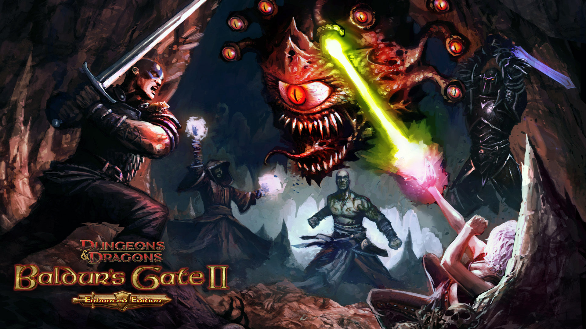
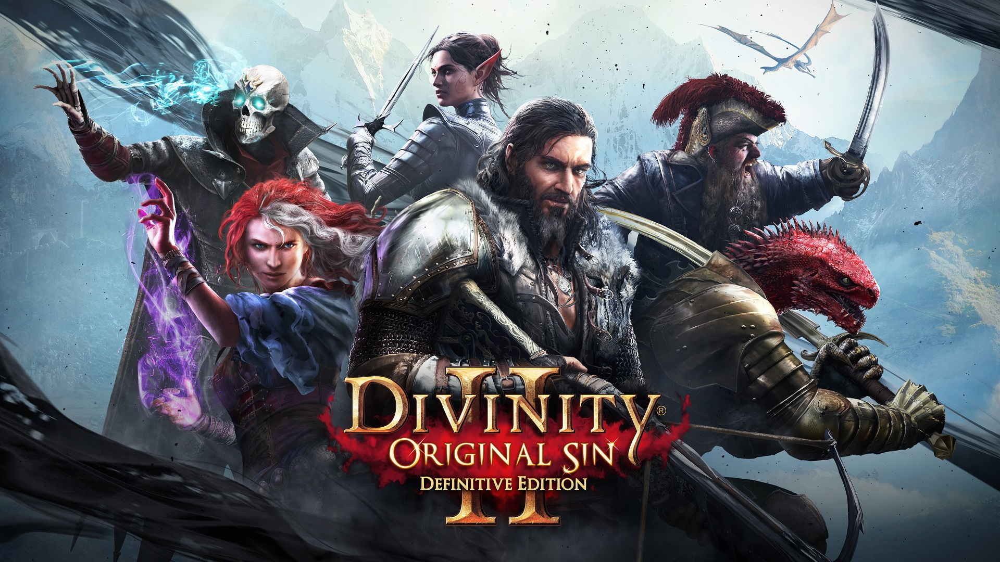
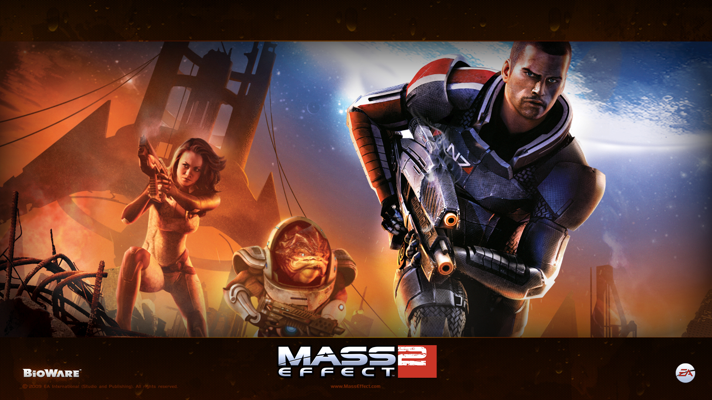

fechar
.jpg)
<

Sobre
>A sigla RPG nada mais é que “Role Playing Game”, ou seja, um jogo onde as pessoas interpretam seus personagens e criam narrativas que giram em torno de um enredo. ... É essencial que um personagem de RPG seja forte, inteligente e hábil, a fim de superar possíveis obstáculos contidos na história em que ele está inserido.
Top 6 RPG do momento.

Baldur's Gate II
O Baldur's Gate 2 retornou com uma versão renovada para Windows, a exemplo do primeiro jogo. Os dois títulos da série de RPGs marcaram época e agora ele ganhou melhoramentos.

Divinity: Original Sin II
Divinity: Original Sin 2, lançado em setembro de 2017 pela Larian Studios, é um RPG por turnos inserido num universo imersivo de fantasia, seguindo o estilo dos primeiros games do gênero.
The Elder Scrolls V: Skyrim
The Elder Scrolls V: Skyrim, quinto jogo da série de RPG medieval da Bethesda, se passa 200 anos após os eventos de Oblivion e está disponível para download no PS4, Xbox, Nintendo S e PC.

Mass Effect 2
CMass Effect 2 é um jogo eletrônico de RPG desenvolvido pela BioWare e publicado originalmente pela Microsoft Game Studios, sendo lançado exclusivamente para o Xbox e Windows em 2010.